Detailed Description
Detailed Description
Front seat belts
The seat-belts are single-hand, three-point belts consisting of an inertia reel with pyrotechnic belt tensioner, a mechanical sensor, belt guide, belt tongue and end fittings.
4D, 5D: The inertia reel is located in the lower part of the B-pillar and sill area.
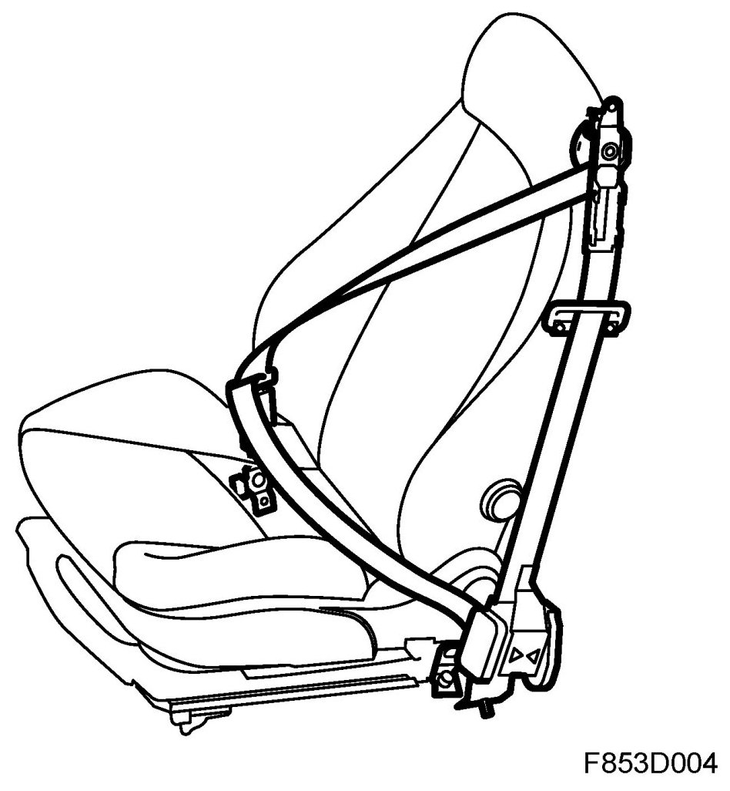
CV: The inertia reel is integrated in the seat.
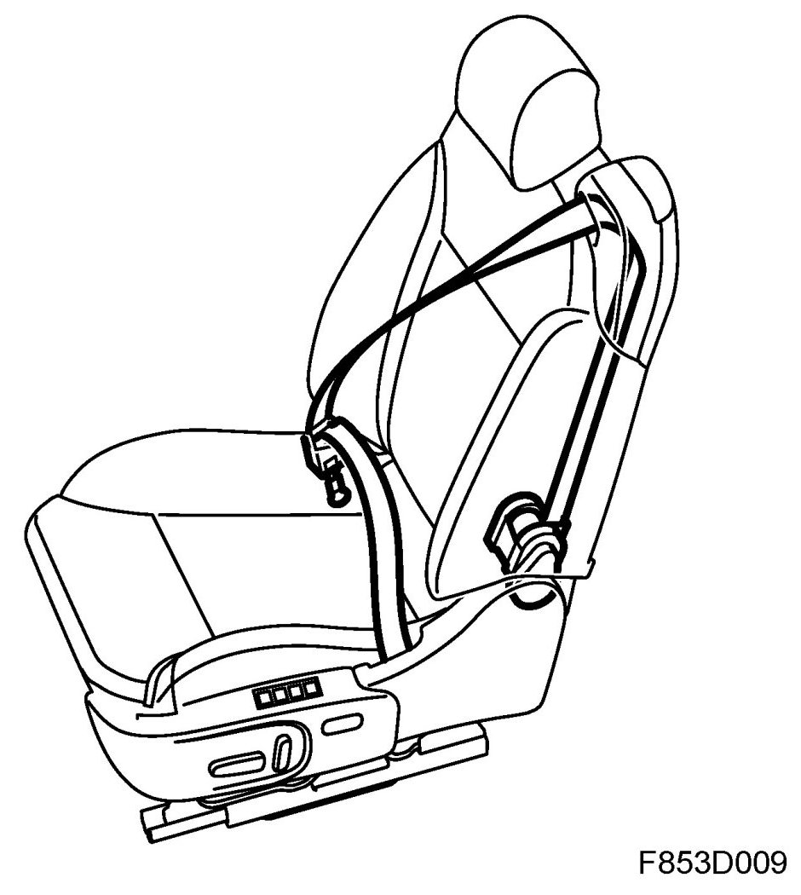
The driver receives a seat-belt warning in the main instrument unit which monitors seat-belt locking. The passenger receives a seat-belt warning in the switch panel.
The inertia reel has a locking system which prevents additional unwinding in the event of a collision. The locking system is controlled by two independent activation systems, one of which is sensitive to vehicle deceleration and the other which is sensitive to belt acceleration of a certain magnitude.
4D: The seatbelts have a belt guide that allows height adjustment.
The hip strap anchorage and buckle are located in the seat frame, which allows the buckle to remain in the same longitudinal position despite seat position and adjusts to the passenger without unfastening. The buckle is equipped with a dual locking function which means that the lock catch, when fastened, is blocked by a pin. The pin opens with the normal release button.
Rear seat belt
4D, 5D: All rear seats have three-point seatbelts. The inertia reels for the outer seats are mounted on the sides of the car behind the backrest just below the parcel shelf. The centre seatbelt's inertia reel is mounted in the seat backrest.
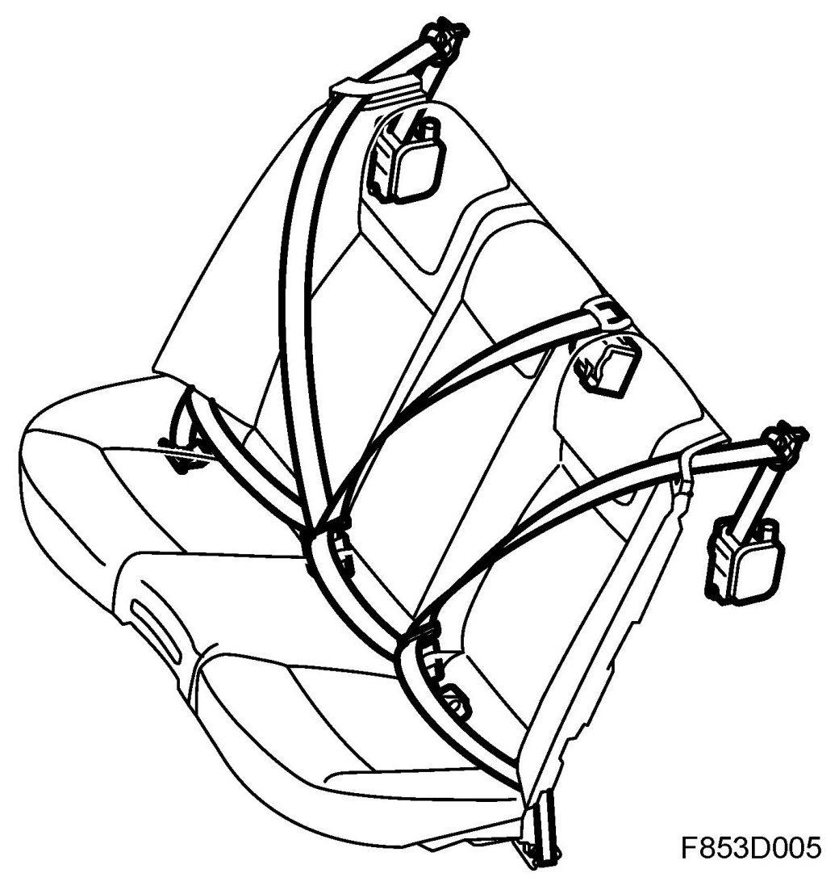
CV: The two rear seatbelts are of the three-point type. The two inertia reels are located in the torsion box behind the backrest. The inertia reels have belt pretensioners.
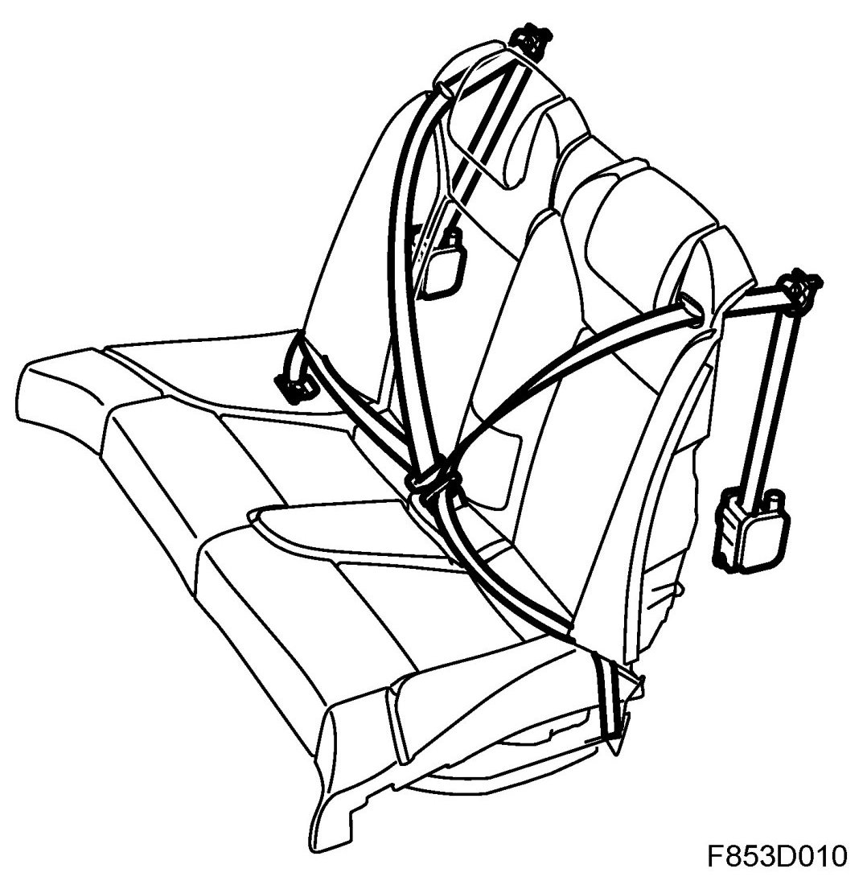
The inertia reel has a locking system which prevents additional unwinding. The locking system is controlled by two independent activation systems, one of which is sensitive to vehicle deceleration and the other which is sensitive to belt acceleration of a certain magnitude.
Belt tensioners
4D, 5D: The car is equipped with belt tensioners on the driver and front passenger seats. The seat belt tensioner pyrotechnic charges are built into the belt tensioner housing. Silicone is used as a sealant in order to reduce gas emissions arising from the activation of the pyrotechnical charges. The belt tensioners are mounted in the lower part of the B-pillars and the sills.
Function
Function The belt tensioner pulls the belt taut during the event of a collision, reducing forward movement of the driver or passenger. Additionally, force limiters release the belt according to a controlled sequence.
The seat belt tensioner consists of a pyrotechnic charge that is activated by the airbag control module together with the airbags. The seat belt tensioners can also be activated separately with a minor head-on collision.
The belt tensioners are compact type. When the belt tensioners are activated, the airbag control module sends a B+ voltage. An electric detonator (1) ignites a pyrotechnical charge (2), which generates a gas pressure that expands in the belt tensioner housing (3).
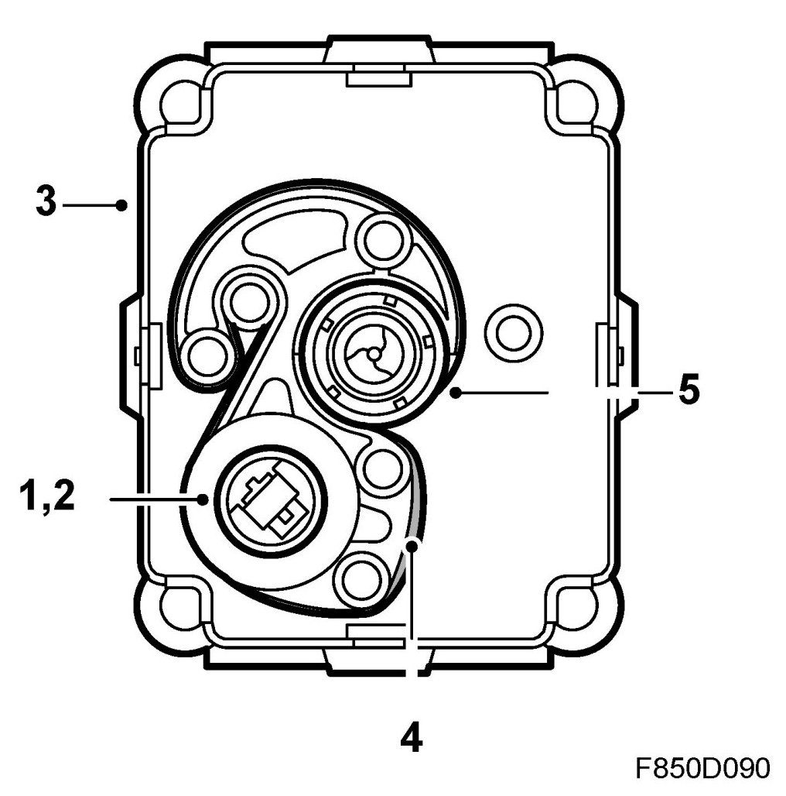
The gas passes into a chamber (4) that moves a steel band (5), which takes with it the belt strap. The belt is pulled taut, pulling back the passenger. The belt is contained using a power limiting torsion part of the inertia reel and the body is held in check as gently as possible.
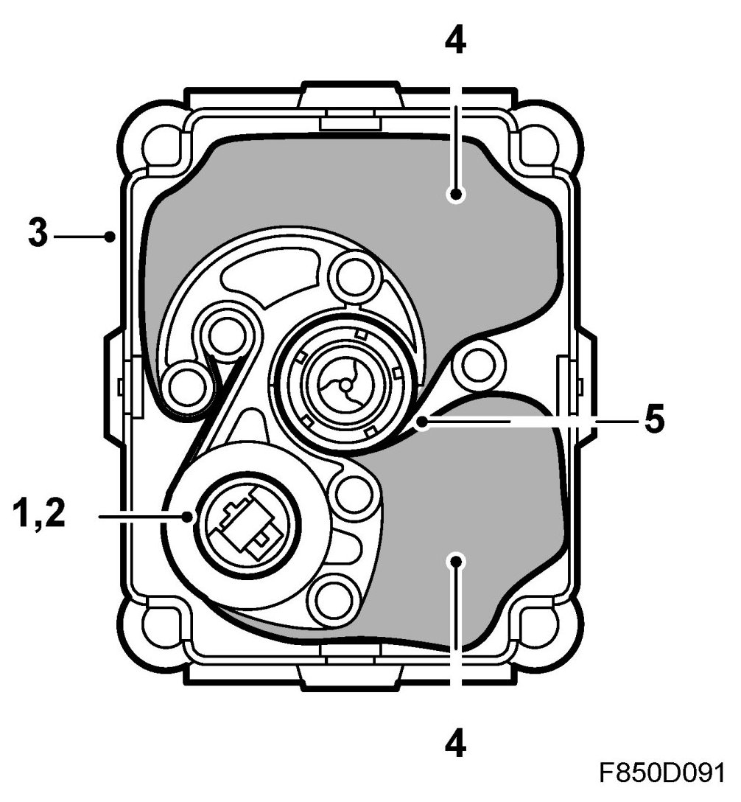
CV:
The seatbelt system consists of two belts integrated in the front seats and two belts in the rear seat. All seatbelts are of the three-point type. All the seatbelts have belt pretensioners. The front belt pretensioners are integrated in the seat and mounted in the lower section of the driver and passenger seat. The rear belt pretensioners are mounted behind the backrest of the rear seat.
Function
The belt tensioner pulls the belt taut during the event of a collision, reducing forward movement of the driver or passenger. Additionally, force limiters release the belt according to a controlled sequence.
The belt tensioner consists of an explosive charge which is activated by the ACM (Airbag Control Module) together with the airbags.
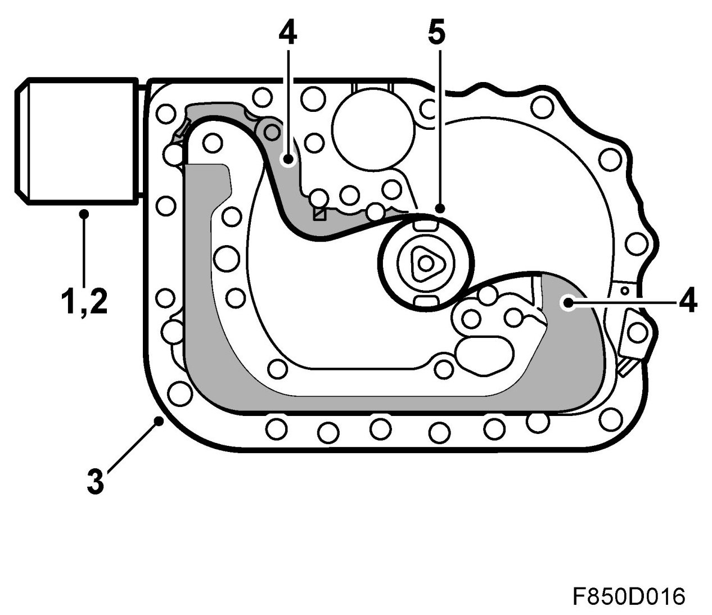
When the compact belt tensioners are activated, the airbag control module applies a B+ voltage feed. An electric detonator ignites an explosive charge which heats and expands in the belt tensioner housing. The gas flow is distributed into two chambers (1) and pushes a steel band (2) which tightens the seat-belt. The belt is pulled taught and takes up the slack in the belt while restraining the passenger. The belt slack is taken up with a force-limiting torsion unit in the belt roller which restrains bodily movement as gently as possible.
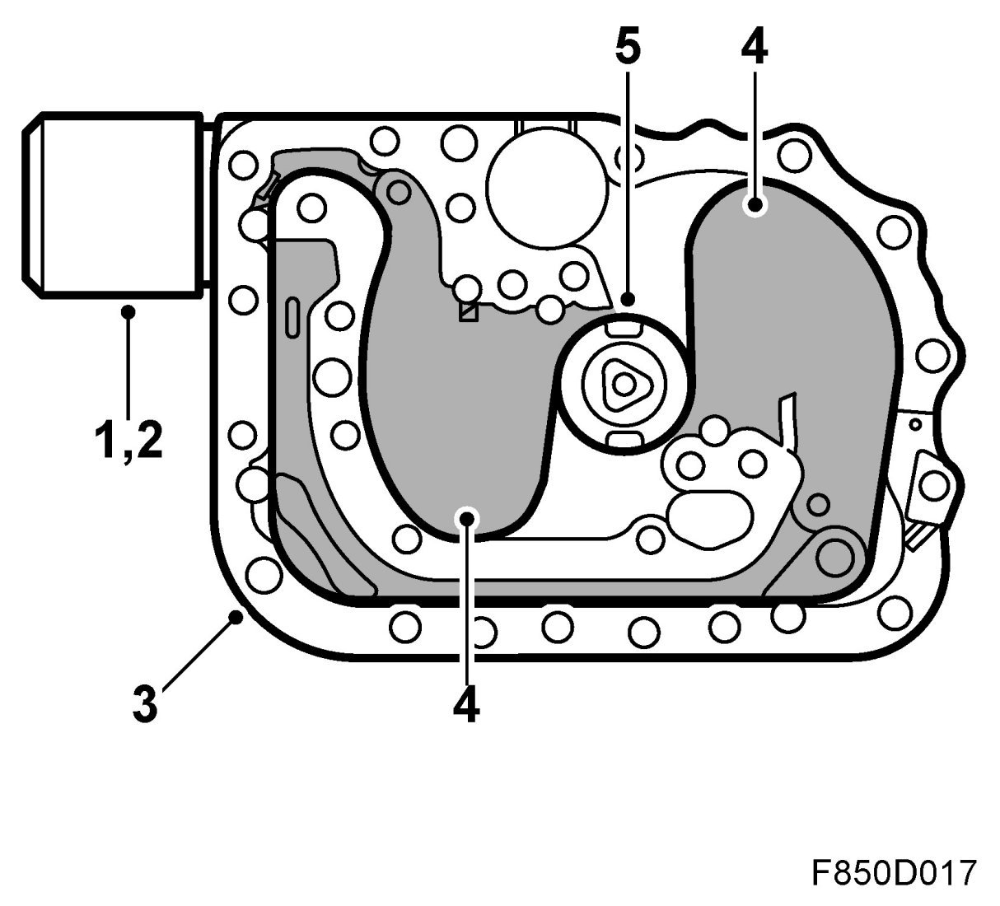
Belt buckle sensor
The front seat-belt buckles are equipped with sensors which detect if the seat-belt buckle is fastened or unfastened. Using information from the seat-belt buckle sensors and seat position sensors, the airbag control module determines how the belt tensioner detonation circuits should be activated. The front belt tensioners can be activated individually while the tensioners for the outer rear seat passengers are always activated simultaneously with at least one of the front belt tensioners.
The seat-belt buckle sensors consist of a Hall sensor (1) containing a circuit board and a magnet (2) which is mounted in front of the Hall sensor on the belt mechanism. The sensor detects the magnetic field generated by the fixed magnet.
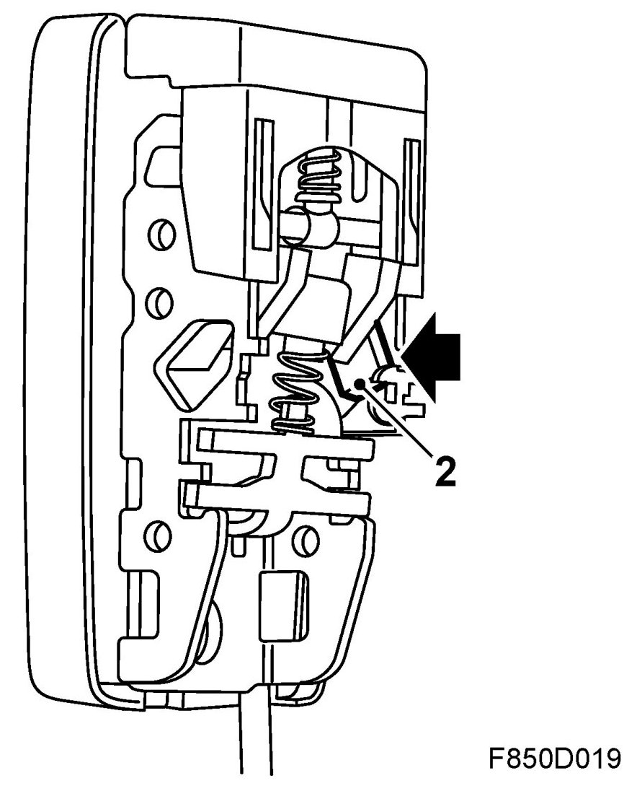
When the belt tongue (3) is not inside the buckle, the magnet (2) lies near the sensor. When the tongue is fastened, the magnet (2) is moved from the Hall sensor and the magnetic field is altered.
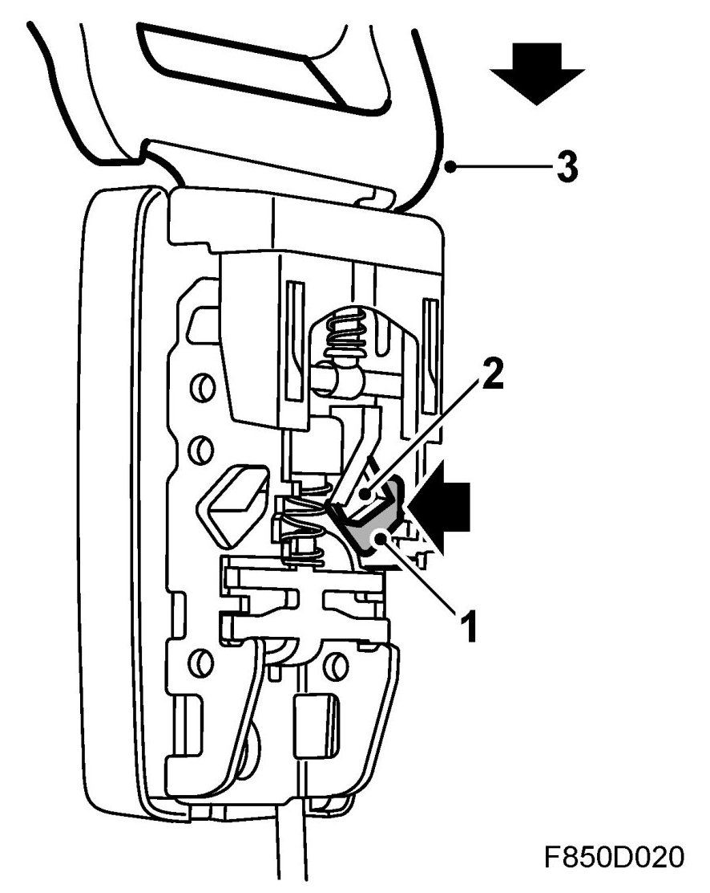
- Unfastened: 4.0-7.0 mA
- Fastened: 12.0-15.0 mA
The airbag control module provides voltage to the Hall sensor every 100 ms while simultaneously measuring the amount of current passing through the sensor. The current passing through the Hall sensor is dependent on the magnetic field that affects the sensor. The airbag control module sends out a bus message and the BCM uses this information in order to switch on the seat-belt warning.
Airbag warning message
In the event of an airbag system fault, the airbag control module transmits a bus message (Display text), which activates a warning message in SID (Airbag fault, contact service), the airbag warning lamp and an audible warning in the audio system.
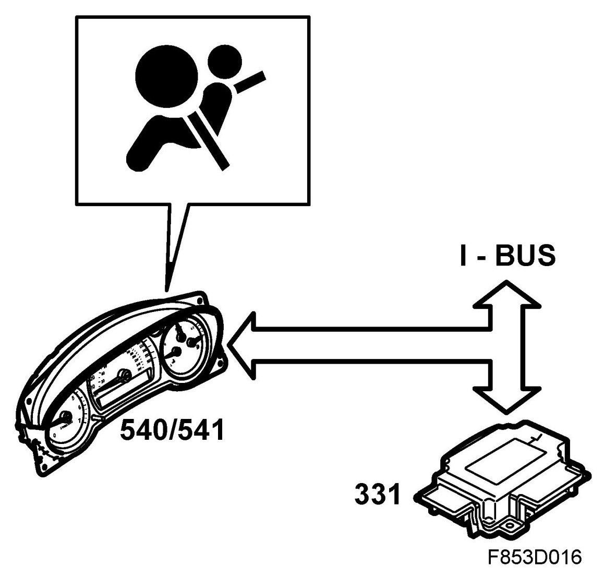
Seat-belt warning
The seat-belt warning monitors fastening of the driver and front passenger seat-belts.
The passenger seat contains a sensor which detects if the seat is occupied. Each seat-belt buckle has a switch (Hall sensor) which is connected to the ACM (Airbag Control Module). If the seat-belt is not fastened, the ACM sends the following bus message on the I-bus:
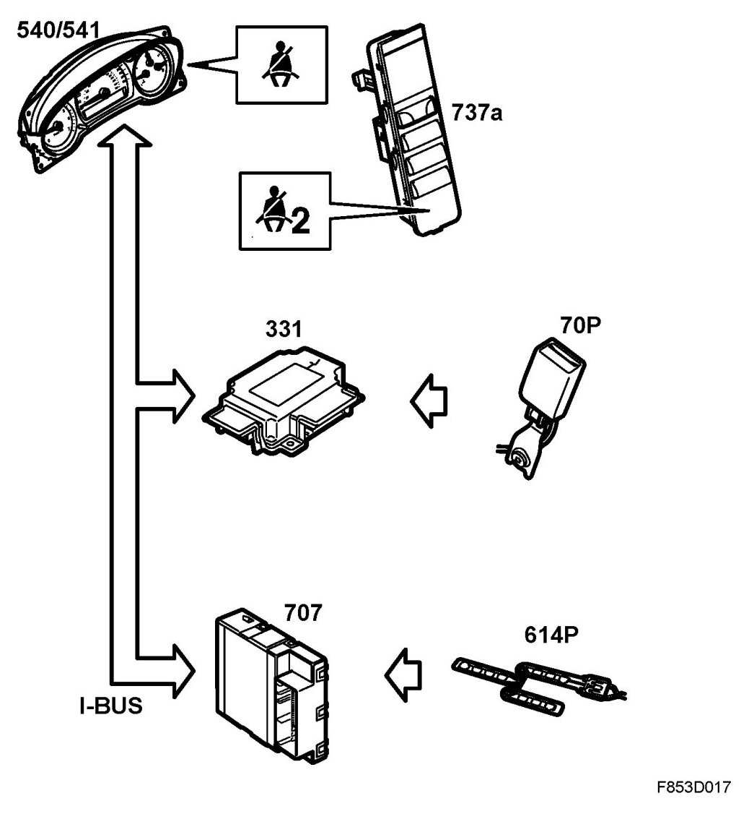
- Driver seat-belt on - off
- Passenger seat-belt on - off
The MIU uses this message in order to light the seat-belt warning:
- Driver seat-belt warning in the main instrument panel, MIU
If the BCM has received information from the passenger seat sensor that the seat is occupied, it sends the following bus message on the I-bus:
- Passenger seat occupied
The MIU uses this message (passenger seat occupied) together with the bus message from the ACM:
- Passenger seat-belt on - off
SID activates the check message and symbol for seatbelt reminder:
- Seatbelt reminder for the passenger in the switch panel: Use the seatbelt.
The belt warning light switches on each time the ignition is in the ON position and remains lit until the seat-belt is fastened.
The seat-belt warning lights when the ignition is in the ON position (+15 and +54) and when the driver or front passenger have not fastened their seat-belt.
The belt contact (70D/70P) contains a Hall sensor which detects if the belt tongue is engaged in the lock or not engaged.
The front passenger seat cushion contains a load sensor. Sensor resistance varies according to the load.
Child seats (Certain markets only)
Automatic Locking Retractor (ALM) Available only in certain markets.
ALR is a locking system for child seats which consists of a small, integrated 'transmission' in the inertia reel. When the entire length of the belt has been extracted, ALR provides a constant locking function. A ticking sound indicates that the function is active.
In order to disconnect the function, the belt should be fed in sufficiently, whereupon the belt will release.